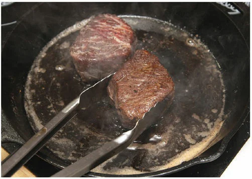
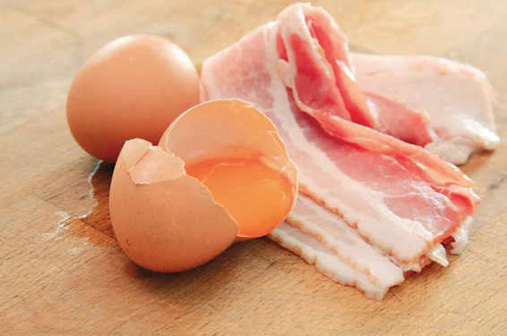
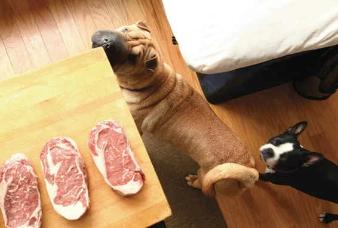
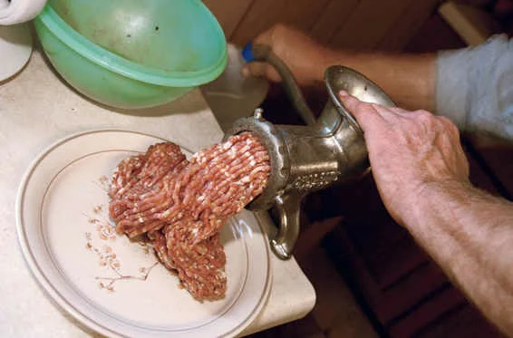
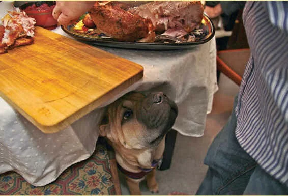
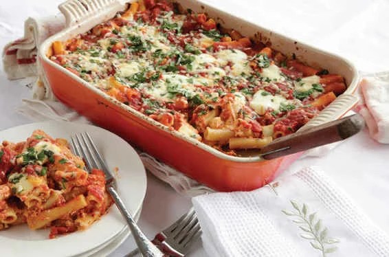
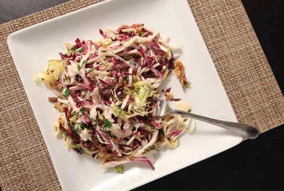
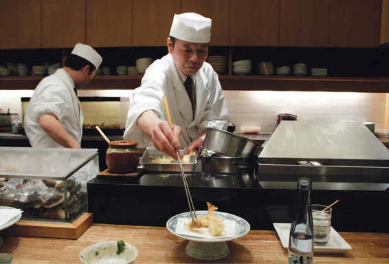

Chapter 00
导读：厨房、工具与储藏室
Introduction · Kitchen Gear · The Basic Pantry
在开始做菜之前，先把厨房本身搭好：这本书怎么用、烹饪到底是什么、哪些锅刀值得买、储藏室里该常备什么。
157 页16 张步骤图工具 + 储藏

Chapter 01
鸡蛋、乳制品与早餐的科学
Eggs, Dairy, and the Science of Breakfast
从一颗蛋开始，把厨房变成实验室。水煮、水波、煎、炒、卷，再到培根、土豆、松饼、比司吉与热可可。
209 页117 张步骤图28 道配方

Chapter 02
汤、炖菜与高汤的科学
Soups, Stews, and the Science of Stock
一锅好汤的起点不是配方，而是骨头、时间和温度：胶原如何变成明胶，香味如何留在汤里，蔬菜该什么时候下锅。
256 页39 张步骤图30 道配方

Chapter 03
牛排、猪排、鸡肉、鱼与快熟食物的科学
Steaks, Chops, Chicken, Fish, and the Science of Fast-Cooking Foods
快熟食物只有几分钟窗口：表面要焦、内部要嫩。理解导热、静置、干式熟成与锅酱，才能每次都煎出想要的熟度。
335 页90 张步骤图40 道配方

Chapter 04
焯、煎、炖、收汁、烤与蔬菜的科学
Blanching, Searing, Braising, Glazing, Roasting, and the Science of Vegetables
同一颗蔬菜，焯、煎、炖、烤会变成四种完全不同的东西。掌握细胞壁、淀粉与美拉德反应，蔬菜不再是配菜。
204 页27 张步骤图40 道配方

Chapter 05
丸子、肉糕、香肠、汉堡与绞肉的科学
Balls, Loaves, Links, Burgers, and the Science of Ground Meat
绞肉是最容易被低估的食材：脂肪比例、盐、温度和搅拌，决定汉堡是多汁还是干柴，香肠是弹牙还是松散。
184 页24 张步骤图22 道配方

Chapter 06
鸡、火鸡、肋眼与烤肉的科学
Chickens, Turkeys, Prime Rib, and the Science of Roasts
烤一只鸡或一块肋眼，本质上是控制热量如何从外向内传递：干腌、低温慢烤、静置与切分，缺一不可。
281 页27 张步骤图29 道配方

Chapter 07
番茄酱、通心粉与意面的科学
Tomato Sauce, Macaroni, and the Science of Pasta
意面、番茄酱和奶酪，藏着淀粉、酸与乳化的全部技巧：怎么煮面、怎么收汁、怎么让酱抱住每一根面。
234 页36 张步骤图34 道配方

Chapter 08
绿叶菜、乳化与沙拉的科学
Greens, Emulsions, and the Science of Salads
沙拉不是“把菜拌在一起”，而是一套关于口感、酸度和乳化的设计：选菜、洗菜、调味、脆感，每一步都有理由。
233 页27 张步骤图36 道配方

Chapter 09
面糊、裹粉与油炸的科学
Batter, Breadings, and the Science of Frying
油炸不是“不健康”的同义词，而是一场关于水分、油温和裹粉的精确控制：外壳如何酥、里面如何嫩。
171 页24 张步骤图14 道配方
不是逐字翻译
按主题重组原书内容，合并重复叙述，保留可操作的小知识点、实验与配方比例。
单位已本地化
不再使用 °F、杯、盎司、磅、英寸。温度 °C，重量克/千克，液体毫升/升，长度厘米/毫米。
关键步骤图
原书插图按章节归档；正文只保留能帮助理解步骤的关键图，并配中文图注，不再单独堆放整章图库。